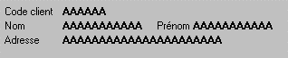
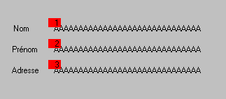

L'ordre de saisie précise l'ordre dans lequel l'utilisateur saisira les données de la page, s'il utilise les touches de déplacement Tab (ou Flèche en bas) et Back-Tab (ou Flèche en haut).
Méthode et règles appliquées par Xwin
Par défaut, l'ordre est déterminé en considérant tout d'abord les variables déclarées "En saisie" présentes sur la première ligne puis celles présentes sur la deuxième ligne et ainsi de suite jusqu'à la fin de la page. Sur une ligne, les variables sont prises de gauche à droite. Après avoir considéré les variables, Xwin applique le même traitement aux boutons déclarés "En saisie".
Quand un nouvel objet est créé dans la page, il est automatiquement mis à sa place dans l'ordre décrit ci-dessus. Si l'option "Ordre de saisie après insertion" est active, vous serez averti par Xwin que l'ordre a été modifié, au moment où vous quitterez la page.
Lorsqu'un objet est déplacé à l'écran, l'ordre n'est pas implicitement modifié. Il faut alors explicitement demander à Xwin de mettre à jour l'ordre de saisie.
Si l'ordre par défaut ne convient pas (saisie en colonnes par exemple), il faut passer par une entrée manuelle de l'ordre de saisie.
Pour préciser l'ordre de saisie des données, appelez le choix Ordre de saisie du menu Paramètres ou cliquez avec le bouton droit dans le fond de la page et sélectionnez le choix Ordre de saisie automatique ou Ordre de saisie manuel.
Si vous choisissez l'ordre de saisie automatique (par défaut), Xwin calcule l'ordre de saisie par défaut.
Exemple :
Avec le masque suivant :

les variables seront saisies - par défaut - dans l'ordre suivant : Code client, Nom, Prénom et Adresse.
Si vous ne choisissez pas l'ordre de saisie automatique, Xwin efface les données déclarées "En affichage". Il ne reste donc plus à l'écran que celles déclarées "En saisie". Un petit carré s'affiche sur chaque objet indiquant sa place dans l'ordre de saisie.

Opérez alors de la manière suivante :
Cliquez sur la donnée qui doit être la première saisie. Elle reçoit le numéro 1 et le carré change de couleur. Cliquez ensuite sur la deuxième donnée, la troisième et ainsi de suite.
Pour ne pas avoir à balayer systématiquement toutes les données, depuis la première jusqu'à la dernière, vous pouvez démarrer la saisie de l'ordre sur n'importe quelle donnée par Ctrl+clic. Ctrl+clic sur une donnée A laisse la donnée A à sa place dans l'ordre, mais le clic suivant sur une donnée B placera celle-ci après la donnée A.
Vous quittez le mode "Ordre de Saisie" :
Lorsque toutes les données en saisie de la page ont été sélectionnées.
En tapant Entrée ou F10.
Attention :
Xwin ne signale pas que l'ordre de saisie initial a été "cassé" par un déplacement d'objet ou par la suppression d'un objet. Il conviendra donc d'être vigilant lors de la modification d'une page où l'ordre de saisie n'est pas celui par défaut.
Cas d'une page incluant des pages panels : voir la rubrique Définition et caractéristiques des objets panels pages.